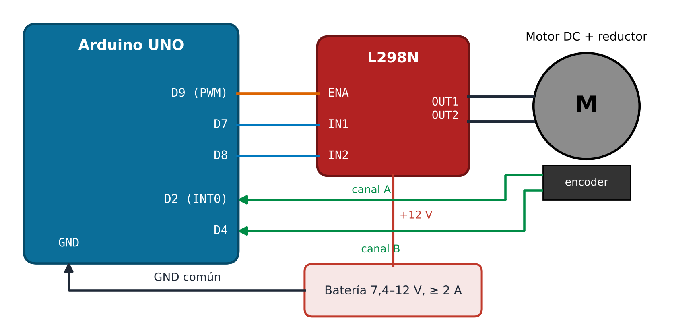
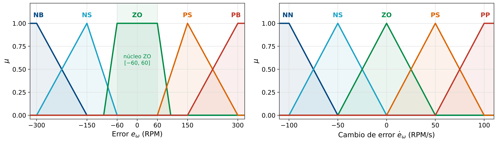
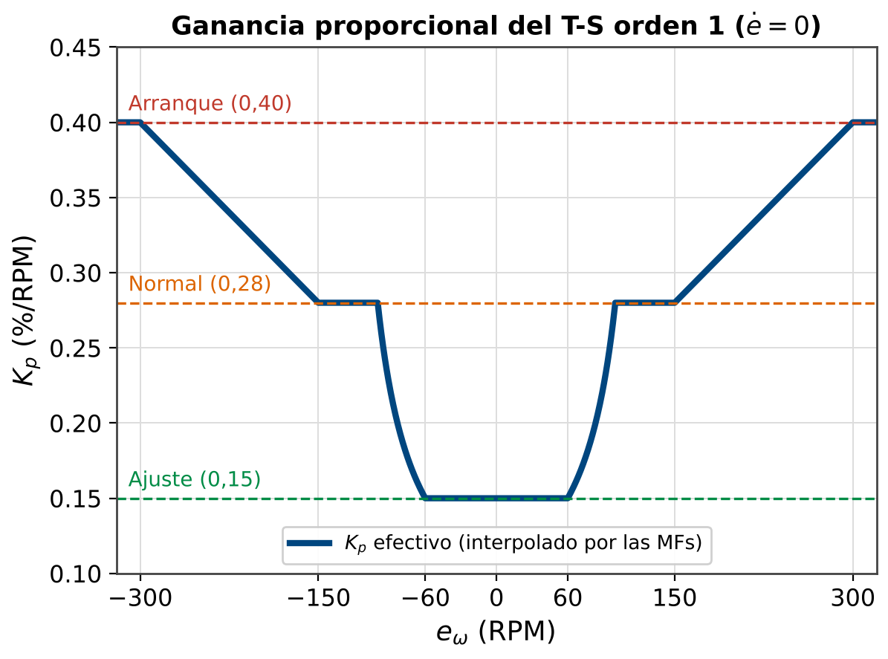
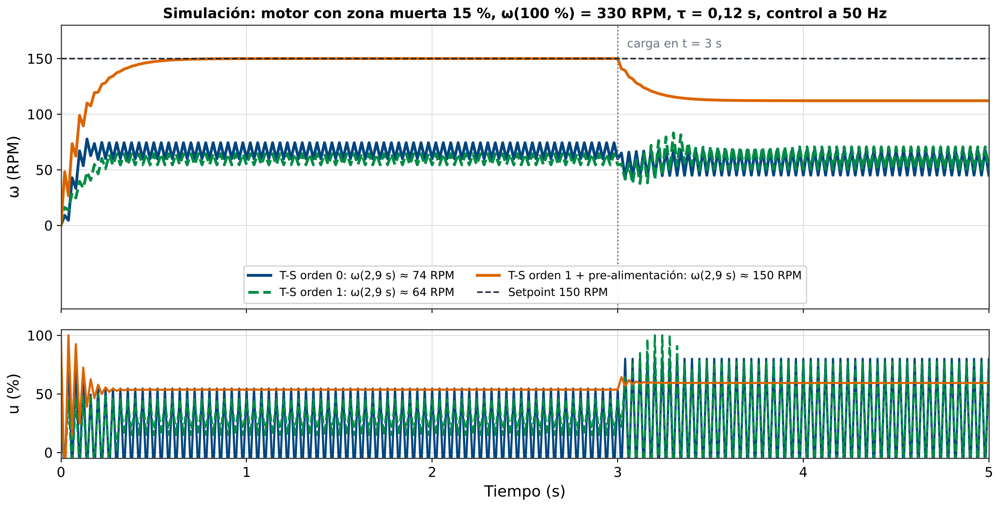

| Motor | DC 6–12V con encoder cuadratura (ej: Pololu 25D, 100+ PPR) |
| Driver | L298N – puente H 2A bidireccional |
| MCU | Arduino UNO (ATmega328P, 16 MHz) |
| Fuente | 7.4V LiPo o 9V regulada, ≥2A |
Pin 9 | ENA del L298N (PWM) |
Pin 7 | IN1 (dirección) |
Pin 8 | IN2 (dirección) |
Pin 2 | Encoder A (INT0) |
Pin 4 | Encoder B (lectura) |
GND común: Arduino + L298N + fuente.

| $\omega_{ref}$ | Velocidad de referencia [RPM] |
| $\omega_{act}$ | Velocidad medida [RPM] |
| $e_\omega$ | $\omega_{ref} - \omega_{act}$ [RPM] |
| $\dot{e}_\omega$ | $(e_k - e_{k-1})/\Delta t$ [RPM/s] |
| $u$ | PWM bidireccional $[-100,+100]$% |
Tabla T-S debe incluir valores negativos.
Los motores DC no giran para $|u|$ pequeño por fricción estática. Valor típico: 15–20%.
Compensación en código:
// Horario:
digitalWrite(IN1, HIGH);
digitalWrite(IN2, LOW);
// Antihorario:
digitalWrite(IN1, LOW);
digitalWrite(IN2, HIGH);/**
* encoder.h -- Lectura de velocidad via encoder cuadratura
* Canal A -> Pin 2 (INT0), Canal B -> Pin 4
* Velocidad en RPM usando diferencia de pulsos
*/
volatile int32_t enc_count = 0; // flancos acumulados
const float PPR = 100.0f; // pulsos/rev del encoder (por canal)
const float GEAR = 30.0f; // relacion de transmision
// ISR: se llama en cada CHANGE (subida y bajada) del canal A
void ISR_encoder() {
// Sentido: A != B -> adelante ; A == B -> atras
if (digitalRead(2) != digitalRead(4)) enc_count++;
else enc_count--;
}
void encoder_init() {
pinMode(2, INPUT_PULLUP);
pinMode(4, INPUT_PULLUP);
attachInterrupt(digitalPinToInterrupt(2),
ISR_encoder, CHANGE);
}
// Devuelve velocidad en RPM (llamar cada DT segundos)
float get_omega_rpm(float dt_s) {
static int32_t prev = 0;
noInterrupts();
int32_t cnt = enc_count;
interrupts();
float delta = (float)(cnt - prev);
prev = cnt;
// CHANGE cuenta 2 flancos por pulso: 2*PPR*GEAR por vuelta
return delta / (2.0f * PPR * GEAR) / dt_s * 60.0f;
}
El núcleo plano de ZO cubre $[-60,+60]$ RPM para absorber la zona muerta del motor y evitar chattering.
El motor DC es simétrico: la tabla de reglas debe ser antisimétrica respecto a ZO-ZO.
| $e_\omega \backslash \dot{e}_\omega$ | NN | NS | ZO | PS | PP |
|---|---|---|---|---|---|
| NB | -100 | -80 | -60 | -30 | -10 |
| NS | -80 | -60 | -30 | -10 | +20 |
| ZO | -20 | -10 | 0 | +10 | +20 |
| PS | -20 | +10 | +30 | +60 | +80 |
| PB | +10 | +30 | +60 | +80 | +100 |
Celda ZO-ZO = 0: sin acción en equilibrio.
La tabla es antisimétrica: si $(e,\dot{e}) \to u$, entonces $(-e,-\dot{e}) \to -u$.
Los valores $\pm 10$ y $\pm 20$ caen en la zona muerta: el código los eleva a 15 %. Además, con ZO-ZO = 0 la tabla es posicional: sin pre-alimentación el motor no sostiene la referencia.
En lugar de un valor constante, cada regla aplica un controlador PD local con ganancias adaptadas:
Resultado global: interpolación suave entre controladores PD.
| Zona | $K_p^k$ | $K_d^k$ | Región |
|---|---|---|---|
| Arranque | 0.40 | 0.08 | $|e|>150$ RPM |
| Normal | 0.28 | 0.05 | $60<|e|\leq150$ |
| Ajuste | 0.15 | 0.02 | $|e|\leq60$ |
Arranque: ganancias altas → respuesta rápida.
Ajuste: ganancias bajas → sin sobreimpulso.

/**
* fuzzifier_motor.h -- Particion difusa para Motor DC
* e_omega in [-300,+300] RPM: NB NS ZO PS PB
* de_omega in [-100,+100] RPM/s: NN NS ZO PS PP
*/
#include "fuzzy_types.h"
#include "fuzzy_mf.h"
// --- Parametros de Error ---
static const float E_NB_B = -300.0f, E_NB_D = -150.0f;
static const TriMF E_NS = {-300.0f, -150.0f, -60.0f};
// ZO: trapezoidal con nucleo [-60, +60]
static const float E_ZO_A = -100.0f, E_ZO_B = -60.0f;
static const float E_ZO_C = 60.0f, E_ZO_D = 100.0f;
static const TriMF E_PS = {60.0f, 150.0f, 300.0f};
static const float E_PB_A = 150.0f, E_PB_C = 300.0f;
FuzzyDegrees fuzzify_e_motor(float e) {
FuzzyDegrees fd; fd.n = N_TERMS;
fd.mu[0] = ltrap(e, E_NB_B, E_NB_D);
fd.mu[1] = trimf(e, E_NS);
// ZO trapezoidal calculado inline
if (e <= E_ZO_A) fd.mu[2] = 0.0f;
else if (e < E_ZO_B) fd.mu[2] = (e - E_ZO_A)/(E_ZO_B - E_ZO_A);
else if (e <= E_ZO_C) fd.mu[2] = 1.0f;
else if (e < E_ZO_D) fd.mu[2] = (E_ZO_D - e)/(E_ZO_D - E_ZO_C);
else fd.mu[2] = 0.0f;
fd.mu[3] = trimf(e, E_PS);
fd.mu[4] = rtrap(e, E_PB_A, E_PB_C);
return fd;
}
// --- Parametros de Cambio de Error ---
static const float DE_NN_B=-100.0f, DE_NN_D=-50.0f;
static const TriMF DE_NS={-100.0f,-50.0f,0.0f};
static const TriMF DE_ZO={-50.0f,0.0f,50.0f};
static const TriMF DE_PS={0.0f,50.0f,100.0f};
static const float DE_PP_A=50.0f, DE_PP_C=100.0f;
FuzzyDegrees fuzzify_de_motor(float de) {
FuzzyDegrees fd; fd.n = N_TERMS;
fd.mu[0] = ltrap(de, DE_NN_B, DE_NN_D);
fd.mu[1] = trimf(de, DE_NS);
fd.mu[2] = trimf(de, DE_ZO);
fd.mu[3] = trimf(de, DE_PS);
fd.mu[4] = rtrap(de, DE_PP_A, DE_PP_C);
return fd;
}// --- Tabla T-S Orden 0 (valores en %) ---
const int8_t TS0[5][5] = {
// NN NS ZO PS PP
{-100, -80, -60, -30, -10}, // NB
{ -80, -60, -30, -10, 20}, // NS
{ -20, -10, 0, 10, 20}, // ZO
{ -20, 10, 30, 60, 80}, // PS
{ 10, 30, 60, 80, 100}, // PB
};
float ts0_infer(const FuzzyDegrees& mu_e,
const FuzzyDegrees& mu_de) {
float num=0.0f, den=0.0f;
for(uint8_t i=0;i<N_TERMS;i++){
if(mu_e.mu[i]<0.001f) continue;
for(uint8_t j=0;j<N_TERMS;j++){
if(mu_de.mu[j]<0.001f) continue;
float a = fmin2(mu_e.mu[i],mu_de.mu[j]);
num += a*(float)TS0[i][j];
den += a;
}
}
return (den>1e-6f)?(num/den):0.0f;
}
// --- T-S Orden 1 (3 zonas de |e| x 5 terminos de de) ---
// Consecuente: y^k = Kp[i]*e + Kd[i]*de (Kp en %/RPM)
// Zonas: 0 = Arranque (NB+PB), 1 = Normal (NS+PS), 2 = Ajuste (ZO)
const float KP[3] = {0.40f, 0.28f, 0.15f}; // Arranque Normal Ajuste
const float KD[3] = {0.08f, 0.05f, 0.02f};
float ts1_infer(float e, float de,
const float mu3[3], const FuzzyDegrees& mu_de) {
float num=0.0f, den=0.0f;
for(uint8_t i=0;i<3;i++){
if(mu3[i]<0.001f) continue;
for(uint8_t j=0;j<N_TERMS;j++){
if(mu_de.mu[j]<0.001f) continue;
float a = fmin2(mu3[i], mu_de.mu[j]);
float yk = KP[i]*e + KD[i]*de;
num += a*yk; den += a;
}
}
return (den>1e-6f)?(num/den):0.0f;
}/**
* ts_motor.ino -- Control T-S Motor DC | Clase 12
* Comandos Serial: '0'=TS0, '1'=TS1, 'p'=metricas, 'r'=reset
*/
#define PIN_PWM 9
#define PIN_IN1 7
#define PIN_IN2 8
const float OMEGA_REF = 150.0f; // RPM objetivo
const float DT = 0.02f; // 50 Hz
const float W60 = 175.0f; // RPM medidas con u=60% (Actividad 1)
bool use_ts1 = false;
bool use_ff = true; // pre-alimentacion ('f' alterna)
// Pre-alimentacion: inversa del mapa estatico (zona muerta 15%)
float u_ff(float w) { return 15.0f + 45.0f * w / W60; }
float e_prev = 0.0f;
float IAE = 0.0f;
void apply_pwm(float u) {
u = constrain(u, -100.0f, 100.0f);
if (fabsf(u) < 1.0f) { analogWrite(PIN_PWM, 0); return; }
float u_abs = fabsf(u);
if (u_abs < 15.0f) u_abs = 15.0f; // compensar zona muerta
digitalWrite(PIN_IN1, u > 0 ? HIGH : LOW);
digitalWrite(PIN_IN2, u > 0 ? LOW : HIGH);
analogWrite(PIN_PWM, (uint8_t)(u_abs*2.55f));
}
void loop() {
static unsigned long t_last = 0;
if (millis()-t_last < (unsigned long)(DT*1000)) return;
t_last = millis();
if (Serial.available()) {
char c = Serial.read();
if (c=='0') use_ts1=false;
if (c=='1') use_ts1=true;
if (c=='p') { Serial.print(F("IAE=")); Serial.println(IAE,2); }
if (c=='r') IAE=0.0f;
}
float omega = get_omega_rpm(DT);
float e = OMEGA_REF - omega;
float de = (e - e_prev) / DT;
e_prev = e;
FuzzyDegrees mu_e = fuzzify_e_motor(e);
FuzzyDegrees mu_de = fuzzify_de_motor(de);
float u;
if (!use_ts1) {
u = ts0_infer(mu_e, mu_de);
} else {
// T-S Orden 1: agrupar los 5 terminos de e en 3 zonas de |e|
float mu3[3] = {
fmin2(1.0f, mu_e.mu[0] + mu_e.mu[4]), // NB+PB -> Arranque
fmin2(1.0f, mu_e.mu[1] + mu_e.mu[3]), // NS+PS -> Normal
mu_e.mu[2] // ZO -> Ajuste
};
u = ts1_infer(e, de, mu3, mu_de);
}
if (use_ff) u += u_ff(OMEGA_REF);
apply_pwm(u);
IAE += fabsf(e) * DT;
Serial.print(omega,1); Serial.print(',');
Serial.print(e,1); Serial.print(',');
Serial.print(u,1); Serial.println();
}apply_pwm(50) y apply_pwm(-50) – verificar ambas direccionesW60 (pre-alimentación)'0'); probar con y sin pre-alimentación (comando 'f')'p')'1')
Sin pre-alimentación ambos T-S quedan lejos de 150 RPM (ZO-ZO = 0) y oscilan por la compensación de zona muerta.
Con $u_{ff}$ el T-S-1 llega rápido y sin sobreimpulso.
Al frenar el eje $e$ sube y el T-S-1 entra en una zona de mayor $K_p$, pero sin acción integral queda un error permanente (≈38 RPM en la simulación).
Motivación del difuso tipo PI (Clase 13).
| Métrica | T-S Orden 0 | T-S Orden 1 |
|---|---|---|
| Tiempo de subida $t_r$ (ms) | _______ | _______ |
| Sobreimpulso $M_p$ (%) | _______ | _______ |
| Tiempo de establecimiento $t_s$ (ms) | _______ | _______ |
| Error en estado estacionario (RPM) | _______ | _______ |
| IAE (RPM·s) | _______ | _______ |
| Caída ante perturbación (RPM) | _______ | _______ |
| Tiempo recuperación (ms) | _______ | _______ |
| $t_{ciclo}$ (μs) | _______ | _______ |
Control Difuso Tipo PD y PI.
Análisis de estabilidad y eliminación del error en estado estacionario.
encoder.h library (Arduino encoder cuadratura)GND común entre Arduino, L298N y batería. Los canales A y B del encoder van a D2 (INT0) y D4. El L298N cae ≈2 V: con batería de 7,4 V el motor recibe ≈5,4 V.
Motor DC: $\omega_{ref}=150$ RPM, $\omega_{act}=120$ RPM, $\dot{e}_\omega=+25$ RPM/s.
$e_\omega = 150 - 120 = +30$ RPM $\dot{e}_\omega = +25$ RPM/s
| Regla | Antecedente | $\alpha_k$ | $r_k$ | $\alpha_k \cdot r_k$ |
|---|---|---|---|---|
| ZO-ZO | $\min(1.0;0.50)=0.50$ | 0.50 | 0 | 0 |
| ZO-PS | $\min(1.0;0.50)=0.50$ | 0.50 | +10 | 5 |
Usando la tabla T-S Orden 0 con valores fijos:
Interpolado entre las celdas ZO-ZO (0) y ZO-PS (+10).
Ventaja: Simple de implementar, sin cálculos adicionales.
Desventaja: No se adapta dinámicamente al error.
Con $e=+30$ RPM (zona "Ajuste", $\mu=1$), se usan $K_p=0.15$, $K_d=0.02$:
En este punto ambos coinciden; difieren lejos del setpoint, donde $K_p$ sube a 0.28–0.40.
Nota: Si $e$ fuera grande (zona "Arranque"), $K_p$ subiría a 0.40 y la respuesta sería mucho más agresiva.